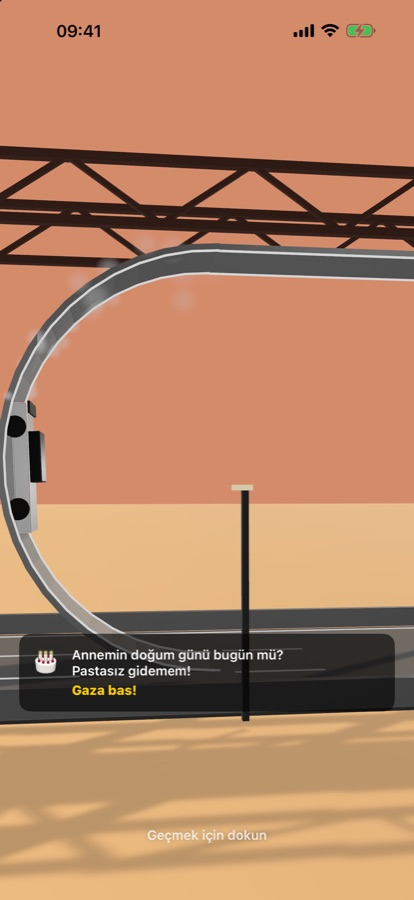
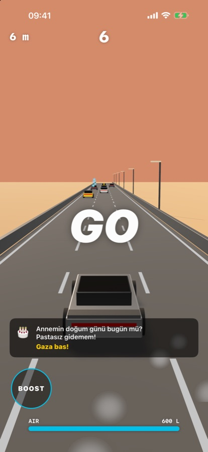
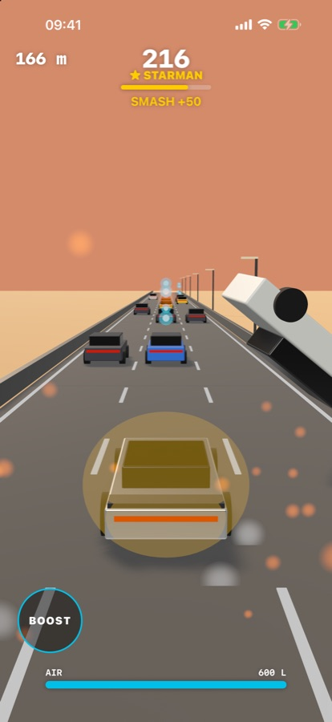
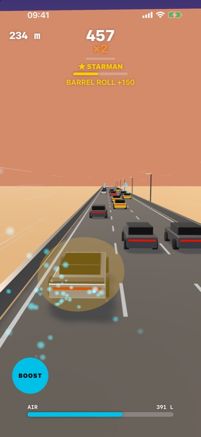

Roadastar tek parmakla oynanan bir otoyol arcade oyunu. Şeritler arasında kaydır, araçların üstünden zıpla ve uç, flip ve barrel roll'ları combo'ya bağla, altın yıldızı yakalayıp trafiği havaya uçur. Tamamen iPhone'unda çalışır; hesap yok, sunucu yok, hiçbir şey bir yere gönderilmez.




Yardım mı lazım?
selahattincincin@gmail.com adresine yaz; genellikle birkaç gün içinde kişisel olarak yanıt verilir.
iPhone modelini, iOS sürümünü ve sorun olduğunda ne yaptığını yazman çok yardımcı olur.
Nasıl oynanır
- ⇆Sağa / sola kaydırŞerit değiştir
- ●DokunZıpla
- ↻Havada tekrar dokunFront flip
- ↺Havada yana kaydırBarrel roll
- ▲Basılı tutUç (AIR harcar)
- ▼Aşağı kaydırYola sert in (slam)
- ⚡BOOST'a basılı tutHızlan (AIR harcar)
- ★Altın yıldız8 saniye STARMAN
Sık sorulanlar
Eğitimi tekrar nasıl görürüm?
Ana menüde Nasıl oynanır?'a dokun ya da profilini açıp Eğitimi tekrar oyna'yı seç. Açılıştaki rampa sahnesinde ekrana dokunursan doğrudan yola geçersin.
Dili, sesi veya titreşimi nasıl değiştiririm?
Ana menünün sol üstündeki profil düğmesine dokun. Sistem, Türkçe ve English arasında geç, sesi aç/kapat, motor ve efekt seslerini ayrı ayarla ya da titreşimi kapat. Sağ üstteki hoparlör düğmesi her şeyi tek dokunuşla susturur.
Hiç ses gelmiyor
Profilde Ses açık'ın açık, iki ses kaydırıcısının da sıfırın üstünde olduğuna bak. Roadastar iPhone'un sessiz moduna uyar; sessiz modu kapatıp sesi aç.
Pilot adımı değiştirebilir miyim?
Evet. Profilini aç, adı düzenle ve Kaydet'e dokun. Harf, rakam ve alt çizgi; 3–14 karakter. Adın yanındaki numara değişmez.
En iyi skorum nerede saklanıyor?
Yalnızca iPhone'unda. Hesap olmadığı için skorlar başka cihaza taşınmaz; uygulamayı silersen skorlar da silinir. Ayrıntısı gizlilik politikasında.
İnternet bağlantısı gerekiyor mu?
Hayır. Oyunun tamamı cihazda çalışır, uçak modunda da oynanır.
Reklam ya da uygulama içi satın alma var mı?
Hayır. Reklam, uygulama içi satın alma ya da abonelik yok.
Hangi iPhone'larda çalışır?
iOS 18 veya üstü olan her iPhone'da. Oyun dikey kullanım için tasarlandı.
Sorun bildir
Çökme, takılma ya da yanlış görünen bir şey mi var? Ne olduğunu ve ne beklediğini e-postayla yaz. Roadastar analiz verisi toplamaz ve çökme raporu göndermez; bir hatanın fark edilmesinin tek yolu senin mesajın.